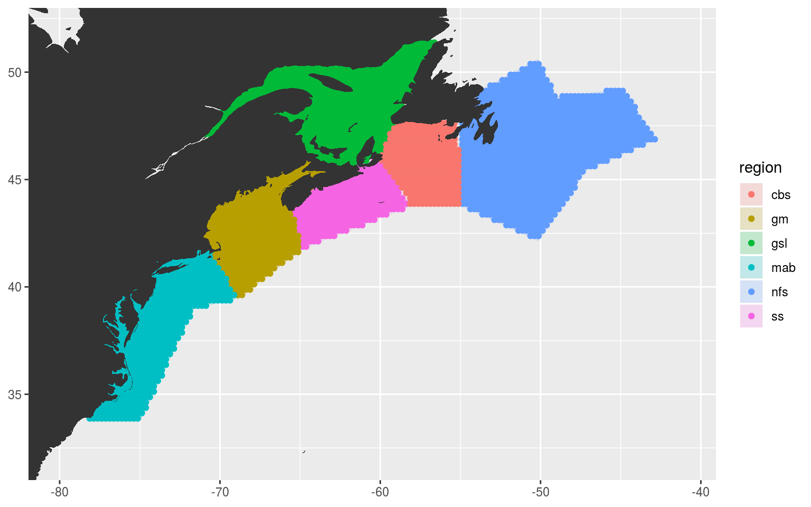
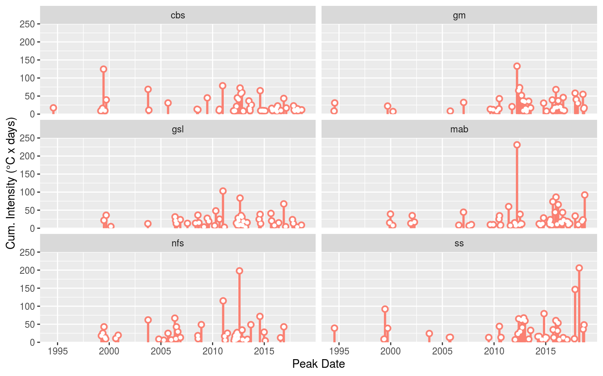

SST preparation
Robert Schlegel
2019-05-23
Last updated: 2019-06-10
workflowr checks: (Click a bullet for more information)-
✔ R Markdown file: up-to-date
Great! Since the R Markdown file has been committed to the Git repository, you know the exact version of the code that produced these results.
-
✔ Environment: empty
Great job! The global environment was empty. Objects defined in the global environment can affect the analysis in your R Markdown file in unknown ways. For reproduciblity it’s best to always run the code in an empty environment.
-
✔ Seed:
set.seed(20190513)The command
set.seed(20190513)was run prior to running the code in the R Markdown file. Setting a seed ensures that any results that rely on randomness, e.g. subsampling or permutations, are reproducible. -
✔ Session information: recorded
Great job! Recording the operating system, R version, and package versions is critical for reproducibility.
-
Great! You are using Git for version control. Tracking code development and connecting the code version to the results is critical for reproducibility. The version displayed above was the version of the Git repository at the time these results were generated.✔ Repository version: 028d3cc
Note that you need to be careful to ensure that all relevant files for the analysis have been committed to Git prior to generating the results (you can usewflow_publishorwflow_git_commit). workflowr only checks the R Markdown file, but you know if there are other scripts or data files that it depends on. Below is the status of the Git repository when the results were generated:
Note that any generated files, e.g. HTML, png, CSS, etc., are not included in this status report because it is ok for generated content to have uncommitted changes.Ignored files: Ignored: .Rhistory Ignored: .Rproj.user/ Ignored: data/NAPA_clim_U.Rda Ignored: data/NAPA_clim_V.Rda Ignored: data/NAPA_clim_W.Rda Ignored: data/NAPA_clim_emp_ice.Rda Ignored: data/NAPA_clim_emp_oce.Rda Ignored: data/NAPA_clim_fmmflx.Rda Ignored: data/NAPA_clim_mldkz5.Rda Ignored: data/NAPA_clim_mldr10_1.Rda Ignored: data/NAPA_clim_qemp_oce.Rda Ignored: data/NAPA_clim_qla_oce.Rda Ignored: data/NAPA_clim_qns.Rda Ignored: data/NAPA_clim_qsb_oce.Rda Ignored: data/NAPA_clim_qt.Rda Ignored: data/NAPA_clim_runoffs.Rda Ignored: data/NAPA_clim_ssh.Rda Ignored: data/NAPA_clim_sss.Rda Ignored: data/NAPA_clim_sst.Rda Ignored: data/NAPA_clim_taum.Rda Ignored: data/NAPA_clim_vars.Rda Ignored: data/NAPA_clim_vecs.Rda Ignored: data/node_mean_all_anom.Rda Ignored: data/packet_all_anom.Rda Ignored: data/som_all_anom.Rda Ignored: data/synoptic_states.Rda Ignored: data/synoptic_vec_states.Rda Untracked files: Untracked: output/som_plot_uoce_anom.pdf Untracked: output/som_plot_voce_anom.pdf Unstaged changes: Modified: analysis/MHWNWA.bib Modified: analysis/_site.yml Modified: code/workflow.R Modified: output/som_plot_mldr10_1_anom.pdf Modified: output/som_plot_qt_anom.pdf Modified: output/som_plot_sst_anom.pdf Modified: output/som_plot_taum_anom.pdf
Expand here to see past versions:
| File | Version | Author | Date | Message |
|---|---|---|---|---|
| html | 028d3cc | robwschlegel | 2019-06-10 | Build site. |
| html | c61a15f | robwschlegel | 2019-06-06 | Build site. |
| html | 6dd6da8 | robwschlegel | 2019-06-06 | Build site. |
| Rmd | 25e7e9a | robwschlegel | 2019-06-05 | SOM pipeline nearly finished |
| Rmd | 94ce8f6 | robwschlegel | 2019-06-04 | Functions for creating data packets are up and running |
| Rmd | 65301ed | robwschlegel | 2019-05-30 | Push before getting rid of some testing structure |
| Rmd | 2c3f68c | robwschlegel | 2019-05-28 | Working on the variable prep vignette |
| html | 5cb8e8f | robwschlegel | 2019-05-28 | Build site. |
| html | c09b4f7 | robwschlegel | 2019-05-24 | Build site. |
| Rmd | 5dc8bd9 | robwschlegel | 2019-05-24 | Finished initial creation of SST prep vignette. |
| Rmd | e008b23 | robwschlegel | 2019-05-24 | Push before changing |
| Rmd | 5b6f248 | robwschlegel | 2019-05-23 | More SST clomp work |
| Rmd | 5c2b406 | robwschlegel | 2019-05-23 | Commit before changes |
| html | d544295 | robwschlegel | 2019-05-23 | Build site. |
| Rmd | 9cb3efa | robwschlegel | 2019-05-23 | Updating work done on the polygon prep vignette. |
Introduction
Building on the work performed in the Polygon preparation vignette, we will now create grouped SST time series for the regions in our study area based on the 50 and 200 m isobaths within each. This will not be done by using shape files to define the area, as previously planned. Rather we will find the mean depth for each SST pixel and assign it to one of the three depth classes within each region. How this looks is shown below.
# Packages used in this vignette
library(jsonlite, lib.loc = "../R-packages/")
library(tidyverse) # Base suite of functions
library(heatwaveR, lib.loc = "../R-packages/") # For detecting MHWs
# cat(paste0("heatwaveR version = ", packageDescription("heatwaveR")$Version))
library(FNN) # For fastest nearest neighbour searches
library(ncdf4) # For opening and working with NetCDF files
# library(tidync) # For a more tidy approach to managing NetCDF data
library(SDMTools) # For finding points within polygons
library(lubridate) # For convenient date manipulation
# Set number of cores
doMC::registerDoMC(cores = 50)
# Disable scientific notation for numeric values
# I just find it annoying
options(scipen = 999)Before we access the SST data from the NAPA (3-Oceans) model, let’s load all of the polygons and bathymetry data we will need to create our grouped time series.
# Corners of the study area
NWA_corners <- readRDS("data/NWA_corners.Rda")
# Individual regions
NWA_coords <- readRDS("data/NWA_coords_cabot.Rda")
# Lowres bathymetry
NWA_bathy <- readRDS("data/NWA_bathy_lowres.Rda")
# The base map
map_base <- ggplot2::fortify(maps::map(fill = TRUE, col = "grey80", plot = FALSE)) %>%
dplyr::rename(lon = long) %>%
mutate(group = ifelse(lon > 180, group+9999, group),
lon = ifelse(lon > 180, lon-360, lon)) %>%
select(-region, -subregion)Pixel prep
NAPA bathymetry
We will now extract the bathymetry data from the NAPA model to use as our guide for how to assign depth values to the different SST pixels.
# Open bathymetry NetCDF file
nc_bathy <- nc_open("../../data/NAPA025/mesh_grid/bathy_creg025_extended_5m.nc")
# Extract and combine lon/lat/bathy
lon <- as.data.frame(ncvar_get(nc_bathy, varid = "nav_lon")) %>%
setNames(., as.numeric(nc_bathy$dim$y$vals)) %>%
mutate(lon = as.numeric(nc_bathy$dim$x$vals)) %>%
gather(-lon, key = lat, value = nav_lon) %>%
mutate(lat = as.numeric(lat))
lat <- as.data.frame(ncvar_get(nc_bathy, varid = "nav_lat")) %>%
setNames(., as.numeric(nc_bathy$dim$y$vals)) %>%
mutate(lon = as.numeric(nc_bathy$dim$x$vals)) %>%
gather(-lon, key = lat, value = nav_lat) %>%
mutate(lat = as.numeric(lat))
bathy <- as.data.frame(ncvar_get(nc_bathy, varid = "Bathymetry")) %>%
mutate(lon = as.numeric(nc$dim$x$vals)) %>%
gather(-lon, key = lat, value = bathy) %>%
mutate(lat = rep(as.numeric(nc_bathy$dim$y$vals), each = 528),
bathy = ifelse(bathy == 0, NA, bathy),
bathy = round(bathy, 2)) %>%
na.omit() %>%
left_join(lon, by = c("lon", "lat")) %>%
left_join(lat, by = c("lon", "lat")) %>%
dplyr::rename(lon_index = lon, lat_index = lat,
lon = nav_lon, lat = nav_lat) %>%
mutate(lon = round(lon, 4),
lat = round(lat, 4))
nc_close(nc_bathy)
# Save bathymetry
# saveRDS(bathy, "data/NAPA_bathy.Rda")
# Save base lon/lat values
NAPA_coords <- left_join(lon, lat, by = c("lon", "lat")) %>%
dplyr::rename(lon_index = lon, lat_index = lat,
lon = nav_lon, lat = nav_lat) %>%
mutate(lon = round(lon, 4),
lat = round(lat, 4))
# saveRDS(NAPA_coords, "data/NAPA_coords.Rda")
# Save bathymetry subsetted to study area
# This functions as an effective mask for water only pixels
# Clean up
rm(nc_bathy, bathy, lon, lat)Assign pixels to regions
With the depths for the model pixels worked out we may now assign them within one of the seven regions.
# Load NAPA bathymetry
NAPA_bathy <- readRDS("data/NAPA_bathy.Rda")# %>%
# mutate(index = paste0(lon, lat))
# Function for finding and cleaning up points within a given region polygon
pnts_in_region <- function(region_in){
region_sub <- NWA_coords %>%
filter(region == region_in)
coords_in <- pnt.in.poly(pnts = NAPA_bathy[4:5], poly.pnts = region_sub[2:3]) %>%
filter(pip == 1) %>%
# mutate(index = paste(lon, lat)) %>%
left_join(NAPA_bathy, by = c("lon", "lat")) %>%
dplyr::select(-pip) %>%
mutate(region = region_in)
return(coords_in)
}
# Run the function
NWA_NAPA_info <- plyr::ldply(unique(NWA_coords$region), pnts_in_region)
# Visualise to ensure success
ggplot(NWA_coords, aes(x = lon, y = lat)) +
geom_polygon(data = map_base, aes(group = group), show.legend = F) +
geom_polygon(aes(fill = region), alpha = 0.2) +
geom_point(data = NWA_NAPA_info, aes(colour = region)) +
coord_cartesian(xlim = NWA_corners[1:2],
ylim = NWA_corners[3:4]) +
labs(x = NULL, y = NULL)
Assign pixels to sub-regions
The pnt.in.poly function was remarkably convenient. Our points have now very easily been placed within their respective regions. The last step now before we move on to creating our clumped time series is to cut the regions up into three groups each based on depth: 0 – 50 m, 51 – 200 m, 201+ m.
# Cut the depth strata into sub-regions as desired
NWA_NAPA_info <- NWA_NAPA_info %>%
mutate(sub_region = cut(bathy, breaks = c(0, 50, 200, ceiling(max(bathy))), dig.lab = 4))
# saveRDS(NWA_NAPA_info, "data/NWA_NAPA_info.Rda")
# Visualise to ensure success
sub_region_map <- ggplot(NWA_coords, aes(x = lon, y = lat)) +
geom_polygon(data = map_base, aes(group = group), show.legend = F) +
# geom_polygon(aes(fill = region), alpha = 0.2) +
geom_point(data = NWA_NAPA_info, aes(colour = region, alpha = sub_region),
shape = 15, size = 0.5) +
guides(colour = guide_legend(override.aes = list(size = 5))) +
scale_alpha_manual(values = c(0.4, 0.7, 1)) +
coord_cartesian(xlim = NWA_corners[1:2],
ylim = NWA_corners[3:4]) +
labs(x = NULL, y = NULL, colour = "Region", alpha = "Sub region")
# ggsave(plot = sub_region_map, filename = "output/sub_region_map.pdf", height = 5, width = 6)
# Visualise
sub_region_map
SST prep
With the NAPA pixels successfully assigned to regions based on their thermal properties, and sub-regions based on their depth, we now need to go about clumping these SST pixels into one average time series per sub/region.
# The NAPA data location
NAPA_files <- dir("../../data/NAPA025/1d_grid_T_2D", full.names = T)
# Function for loading the individual NAPA NetCDF files and subsetting SST accordingly
load_NAPA_sst_sub <- function(file_name, coords = NWA_NAPA_info){
nc <- nc_open(as.character(file_name))
date_start <- ymd(str_sub(basename(as.character(file_name)), start = 29, end = 36))
date_end <- ymd(str_sub(basename(as.character(file_name)), start = 38, end = 45))
date_seq <- seq(date_start, date_end, by = "day")
sst <- as.data.frame(ncvar_get(nc, varid = "sst")) %>%
mutate(lon = as.numeric(nc$dim$x$vals)) %>%
gather(-lon, key = lat, value = temp) %>%
mutate(t = rep(date_seq, each = 388080),
lat = rep(rep(as.numeric(nc$dim$y$vals), each = 528), times = 5),
temp = round(temp, 2)) %>%
select(lon, lat, t, temp) %>%
na.omit() %>%
dplyr::rename(lon_index = lon, lat_index = lat) %>%
right_join(coords, by = c("lon_index" , "lat_index")) %>%
group_by(region, sub_region, t) %>%
summarise(temp = mean(temp, na.rm = T))
nc_close(nc)
return(sst)
}
# Clomp'em
system.time(
NAPA_sst_sub <- plyr::ldply(NAPA_files,
.fun = load_NAPA_sst_sub,
.parallel = TRUE)
) # 1.5 seconds for 1, 135 seconds for all
# For some reason the rounding didn't stick in the function above so we wack it again here
NAPA_sst_sub <- NAPA_sst_sub %>%
mutate(temp = round(temp, 2))
# Save
# saveRDS(NAPA_sst_sub, "data/NAPA_sst_sub.Rda")MHW detection
With our clumped SST time series ready the last step in this vignette is to detect the MHWs within each.
# Load the time series data
NAPA_sst_sub <- readRDS("data/NAPA_sst_sub.Rda")
# Calculate base results
NAPA_MHW_sub <- NAPA_sst_sub %>%
group_by(region, sub_region) %>%
nest() %>%
mutate(clims = map(data, ts2clm,
# NB: I've chosen here to use as much of the 2015 data as exists,
# rather than to use none of it as I think it will create a better climatology
# even though the last two days of the year are missing
climatologyPeriod = c("1994-01-01", "2015-12-29")),
events = map(clims, detect_event),
cats = map(events, category)) %>%
select(-data)
# saveRDS(NAPA_MHW_sub, "data/NAPA_MHW_sub.Rda")With the MHWs detected, let’s visualise the results to ensure everything worked as expected.
# Load MHW results
NAPA_MHW_sub <- readRDS("data/NAPA_MHW_sub.Rda")
# Events
NAPA_MHW_event <- NAPA_MHW_sub %>%
select(-clims, -cats) %>%
unnest(events) %>%
filter(row_number() %% 2 == 0) %>%
unnest(events)
event_lolli_plot <- ggplot(data = NAPA_MHW_event , aes(x = date_peak, y = intensity_max)) +
geom_lolli(colour = "salmon", colour_n = "red", n = 3) +
labs(x = "Peak Date", y = "Max. Intensity (°C)") +
# scale_y_continuous(expand = c(0, 0))+
facet_grid(region~sub_region)
# ggsave(plot = event_lolli_plot, filename = "output/event_lolli_plot.pdf", height = 7, width = 13)
# Visualise
event_lolli_plot
Expand here to see past versions of MHW-vis-1.png:
| Version | Author | Date |
|---|---|---|
| 6dd6da8 | robwschlegel | 2019-06-06 |
| c09b4f7 | robwschlegel | 2019-05-24 |
Everything appears to check out. Up next in the Variable preparation vignette we will go through the steps necessary to build the data that will be fed into our self-organising maps as seen in the Self-organising map (SOM) analysis vignette.
One last point however is that according to Richaud et al. (2016) the different slopebreaks for the different regions occur at different depths, from 50 m to 400 m depending. They do however note that using a static definition of 200 m for the break does not produce significantly different results. Therefore, for the time being we will maintain the spatial breaks used above.
Richaud, B., Kwon, Y.-O., Joyce, T. M., Fratantoni, P. S., and Lentz, S. J. (2016). Surface and bottom temperature and salinity climatology along the continental shelf off the canadian and us east coasts. Continental Shelf Research 124, 165–181.
Session information
sessionInfo()R version 3.6.0 (2019-04-26)
Platform: x86_64-pc-linux-gnu (64-bit)
Running under: Ubuntu 16.04.5 LTS
Matrix products: default
BLAS: /usr/lib/openblas-base/libblas.so.3
LAPACK: /usr/lib/libopenblasp-r0.2.18.so
locale:
[1] LC_CTYPE=en_CA.UTF-8 LC_NUMERIC=C
[3] LC_TIME=en_CA.UTF-8 LC_COLLATE=en_CA.UTF-8
[5] LC_MONETARY=en_CA.UTF-8 LC_MESSAGES=en_CA.UTF-8
[7] LC_PAPER=en_CA.UTF-8 LC_NAME=C
[9] LC_ADDRESS=C LC_TELEPHONE=C
[11] LC_MEASUREMENT=en_CA.UTF-8 LC_IDENTIFICATION=C
attached base packages:
[1] stats graphics grDevices utils datasets methods base
other attached packages:
[1] bindrcpp_0.2.2 lubridate_1.7.4 SDMTools_1.1-221
[4] ncdf4_1.16 FNN_1.1.2.1 heatwaveR_0.3.6.9004
[7] data.table_1.11.6 forcats_0.3.0 stringr_1.3.1
[10] dplyr_0.7.6 purrr_0.2.5 readr_1.1.1
[13] tidyr_0.8.1 tibble_1.4.2 ggplot2_3.0.0
[16] tidyverse_1.2.1 jsonlite_1.6
loaded via a namespace (and not attached):
[1] Rcpp_0.12.18 lattice_0.20-35 assertthat_0.2.0
[4] rprojroot_1.3-2 digest_0.6.16 foreach_1.4.4
[7] R6_2.2.2 cellranger_1.1.0 plyr_1.8.4
[10] backports_1.1.2 evaluate_0.11 httr_1.3.1
[13] pillar_1.3.0 rlang_0.2.2 lazyeval_0.2.1
[16] readxl_1.1.0 rstudioapi_0.7 whisker_0.3-2
[19] R.utils_2.7.0 R.oo_1.22.0 rmarkdown_1.10
[22] labeling_0.3 htmlwidgets_1.3 munsell_0.5.0
[25] broom_0.5.0 compiler_3.6.0 modelr_0.1.2
[28] pkgconfig_2.0.2 htmltools_0.3.6 tidyselect_0.2.4
[31] workflowr_1.1.1 codetools_0.2-15 doMC_1.3.5
[34] viridisLite_0.3.0 crayon_1.3.4 withr_2.1.2
[37] R.methodsS3_1.7.1 grid_3.6.0 nlme_3.1-137
[40] gtable_0.2.0 git2r_0.23.0 magrittr_1.5
[43] scales_1.0.0 cli_1.0.0 stringi_1.2.4
[46] reshape2_1.4.3 xml2_1.2.0 iterators_1.0.10
[49] tools_3.6.0 glue_1.3.0 maps_3.3.0
[52] hms_0.4.2 parallel_3.6.0 yaml_2.2.0
[55] colorspace_1.3-2 rvest_0.3.2 plotly_4.9.0
[58] knitr_1.20 bindr_0.1.1 haven_1.1.2 This reproducible R Markdown analysis was created with workflowr 1.1.1